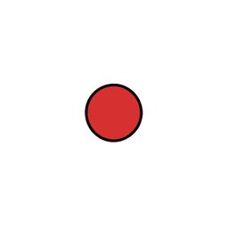
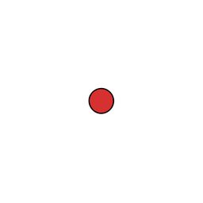
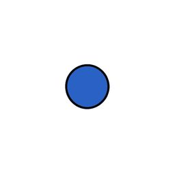
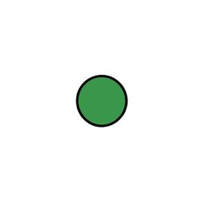
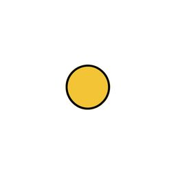

qwen38_27bcompose
Q 크다의 반대말에 해당하는 그림을 고르세요.
A 1
A 1

기준자동 판정 없음
사물을 1행 1열 격자로 놓는다. 첫째 칸에 빨강 원형 낱개 하나 공 하나. 사물끼리 닿지 않고 넉넉히 떨어져 있다. 배경은 흰 바닥이 보인다이다.
사물을 1행 1열 격자로 놓는다. 첫째 칸에 빨강 원형 낱개 하나 공 하나. 사물끼리 닿지 않고 넉넉히 떨어져 있다. 배경은 흰 바닥이 보인다이다.

보기 1자동 판정 없음
사물을 1행 1열 격자로 놓는다. 첫째 칸에 빨강 원형 낱개 하나 공 하나 (작게). 사물끼리 닿지 않고 넉넉히 떨어져 있다. 배경은 흰 바닥이 보인다이다.
사물을 1행 1열 격자로 놓는다. 첫째 칸에 빨강 원형 낱개 하나 공 하나 (작게). 사물끼리 닿지 않고 넉넉히 떨어져 있다. 배경은 흰 바닥이 보인다이다.

보기 2자동 판정 없음
사물을 1행 1열 격자로 놓는다. 첫째 칸에 파랑 원형 낱개 하나 공 하나. 사물끼리 닿지 않고 넉넉히 떨어져 있다. 배경은 흰 바닥이 보인다이다.
사물을 1행 1열 격자로 놓는다. 첫째 칸에 파랑 원형 낱개 하나 공 하나. 사물끼리 닿지 않고 넉넉히 떨어져 있다. 배경은 흰 바닥이 보인다이다.

보기 3자동 판정 없음
사물을 1행 1열 격자로 놓는다. 첫째 칸에 초록 원형 낱개 하나 공 하나. 사물끼리 닿지 않고 넉넉히 떨어져 있다. 배경은 흰 바닥이 보인다이다.
사물을 1행 1열 격자로 놓는다. 첫째 칸에 초록 원형 낱개 하나 공 하나. 사물끼리 닿지 않고 넉넉히 떨어져 있다. 배경은 흰 바닥이 보인다이다.

보기 4자동 판정 없음
사물을 1행 1열 격자로 놓는다. 첫째 칸에 노랑 원형 낱개 하나 공 하나. 사물끼리 닿지 않고 넉넉히 떨어져 있다. 배경은 흰 바닥이 보인다이다.
사물을 1행 1열 격자로 놓는다. 첫째 칸에 노랑 원형 낱개 하나 공 하나. 사물끼리 닿지 않고 넉넉히 떨어져 있다. 배경은 흰 바닥이 보인다이다.